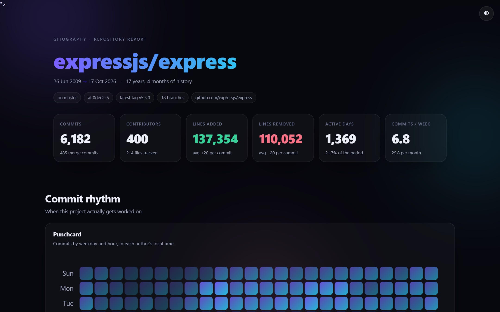

Live demo · zero dependencies · fully offline
Your Git history,
wrapped.
Point gitography at any repository and get a beautiful, interactive, single-file report: when the work happened, who did it, which files keep changing, and the awards nobody asked for.
npx gitography # inside any repository
Self-contained
One HTML file with inline CSS, inline SVG charts and no network requests. Attach it to a release or open it on a plane.
Zero dependencies
No install tree, no native build. It shells out to the git you already have.
Works on private repos
No GitHub API, no token, no upload. Your history never leaves the machine.
The demo report above is expressjs/express: 6,182 commits, 400 contributors, 17 years.
README
MIT